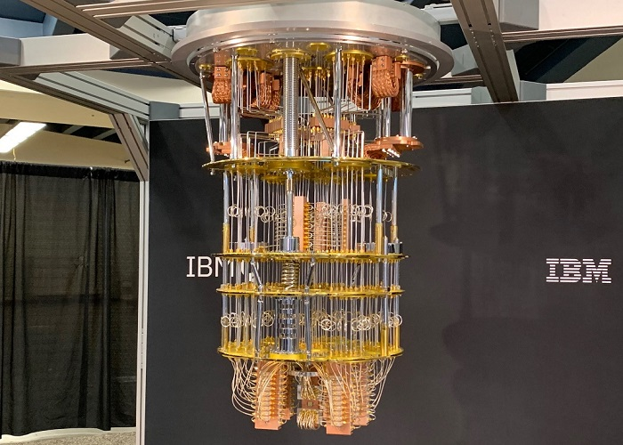

Quantum
Computing
Introduction

Quantum computing is a modern way of computing that is based on the science of quantum mechanics and its unbelievable phenomena.
It is a beautiful combination of physics, mathematics, computer science and information theory.
It provides high computational power, less energy consumption and exponential speed over classical computers by controlling the behavior of small physical objects i.e. microscopic particles like atoms, electrons, photons, etc. Here, we present an introduction to the fundamental concepts and some ideas of quantum computing.
Prototypes
Quantum computing is heating up, as a growing number of entities race to benchmark, stabilize, and ultimately commercialize this technology.
Here you are some of the most outstanding prototypes

IBM'S QUISKIT

GOOGLE'S SYCAMORE